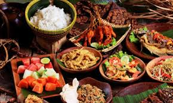

Kuliner Jogja menawarkan perpaduan cita rasa manis khas Jawa (gudeg, yangko, kipo) dan pedas gurih, dengan ikon wajib seperti Gudeg Wijilan, Sate Klatak Pak Pong, Kopi Klotok, dan Lumpia Sami Jaya. Wisatawan juga wajib mencoba kuliner legendaris seperti Jenang Bu Darmini di Pasar Beringharjo serta oleh-oleh kekinian seperti Bakpia Pathok.
Beberapa rekomendasi untuk menikmati kuliner Jogja yang disebutkan di atas: cobalah Gudeg Wijilan saat pagi hari di warung tradisional untuk rasa otentik, bawa pulang Bakpia Pathok sebagai oleh-oleh, dan nikmati kopi klotok di warung desa untuk suasana lokal yang khas.
Minuman khas DIY menawarkan perpaduan cita rasa manis, segar, dan unik. Beberapa minuman yang wajib dicoba antara lain Wedang Ronde, Es Dawet, Es Cendol, Es Kopyor, dan Es Degan. Wedang Ronde adalah minuman hangat dengan bola-bola ketan berisi kacang dan jahe yang menyegarkan. Es Dawet dan Es Cendol adalah minuman dingin dengan campuran santan, gula merah, dan cendol yang kenyal. Es Kopyor menyajikan kelapa muda dengan sirup manis, sementara Es Degan menyegarkan dengan air kelapa muda dan es batu. Minuman-minuman ini tidak hanya menyegarkan tetapi juga mencerminkan kekayaan kuliner DIY yang unik dan lezat.
Selain itu, minuman khas DIY juga sering dijadikan oleh-oleh bagi wisatawan yang berkunjung. Es Dawet dan Es Cendol, misalnya, bisa ditemukan dalam kemasan praktis yang mudah dibawa pulang. Minuman-minuman ini

| No | Nama | Kota/Kab |
|---|---|---|
| 1 | Gudeg | Yogyakarta |
| 2 | Gethuk | Sleman |
| 3 | Tiwul | Bantul |
| 4 | Bakpia | Gunungkidul |
| 5 | Gebleg | Kulon Progo |